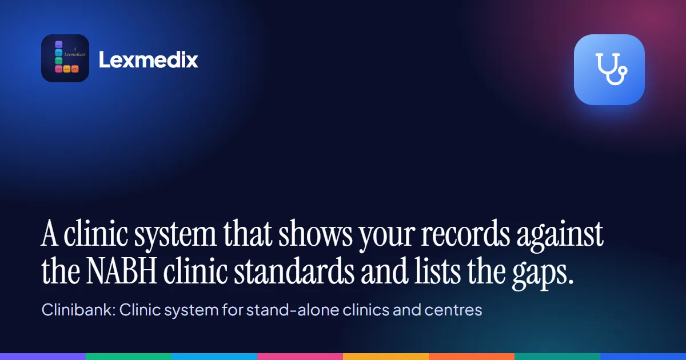

An NABH assessment isn't a test of how good your clinic looks. It's a check of what you can show. For almost every question an assessor asks, the honest answer is a record: a register, a signed form, a list with a date on it, a log someone has kept up. A clinic that does good work but can't produce the record loses the point.
This is what I'd expect an assessor to ask for at an allopathic clinic, chapter by chapter, using the second edition of the clinic standards. Dental, eye care, ART and AYUSH centres have their own NABH standards, and the specialty questions differ. The everyday ones below are common to most.
Access, assessment and continuity (AAC)
The assessor starts with what you say you do. Your services should be defined and shown to patients, and you should accept only the patients you have services for. Expect to be asked for the written content of a first assessment, how soon it's done, and how a patient is told when to come back. If you run a laboratory or imaging inside the clinic, there's more: its scope has to match your services, and the quality and safety programmes for each have to be on paper.
What to have ready: the services list as displayed, the registration process, the follow-up record, and the quality and safety records of your lab or imaging.
Care of patients (COP)
Here the question is whether care is given the same way each time. Orders should be signed, named, timed and dated. A qualified person should be available during care. High-risk patients should be identified, medico-legal cases handled in writing, and pain managed by a written guide. The clinic should be able to show how it spots a patient getting worse and that resuscitation is available at all times.
What to have ready: signed and timed consultation notes, the medico-legal register, the high-risk patient list and the emergency tray check.
Management of medication (MOM)
This chapter is one of the longest, with seven standards. The questions go from the formulary, to how medicines are stored, to how they're given. Storage means clean, safe and secure, with inventory control, a defined list of high-risk medicines, look-alike and sound-alike medicines kept apart, and emergency medicines that are listed, stored alike and always there. Near-expiry stock and recalls have to be handled. In prescribing, the assessor looks for the minimum content of a prescription, allergies asked before prescribing, rules for verbal orders, and prescription audits with action taken on what they show.
What to have ready: the formulary, the high-risk and look-alike lists, expiry checks, the emergency medicine check, and a prescription audit with the follow-up.
Patient rights and education (PRE)
The assessor wants to see that patients are told their rights and duties in a language they understand, that privacy and confidentiality are respected, and that there's a way to complain. Informed consent before invasive procedures has to cover risks, benefits and alternatives. Expected costs should be told, and a tariff list should be available.
What to have ready: the displayed rights, the signed consent forms (count them against the procedures done), the complaint register and the tariff.
Infection prevention and control (IPC)
Written infection control guidance, standard precautions, cleaning, disinfection and sterilisation, safe injection practice and antibiotic use by guideline all come up. So do the support services: housekeeping, laundry and biomedical waste handled under the rules.
What to have ready: the disinfection and sterilisation logs, the biomedical waste records for every working day, and the housekeeping checklists.
Patient safety and quality (PSQ)
A patient safety programme that matches your services, covering events from no harm to sentinel events, and a documented quality programme that's reviewed at set intervals. The assessor will ask what you've measured and what you changed because of it.
What to have ready: the incident and near-miss record, the indicators you track, and the minutes or notes of the review.
Management, facility and people (ROM, FMS, HRM)
Management means an organisation chart, administrative guidance, compliance with the laws that apply to you, reporting of notifiable diseases, and billing by a standard tariff. Facility questions cover fire escape routes, signage in the patient's language, equipment that is inspected and calibrated, safe water and electricity, and emergency plans with trained staff. For people: enough qualified staff, a code of conduct, background checks, a personal record for every staff member, induction and continuing training, and yearly health checks of staff.
What to have ready: licences and their expiry dates, the equipment calibration and maintenance log, the fire drill record, and a staff file with training entries for each person.
Information management (IMS)
A medical record with a unique identifier, a complete and chronological record of care, and entries that show date, time and author. Past records should be available to the people treating the patient, and you should know how long records are kept. If you use a computer system, the assessor will ask how it fits your needs and what you do when it's down.
What to have ready: a sample of records to open on the spot, the retention rule, and the downtime procedure.
How I'd get a clinic ready
I'd go clause by clause and write down, for each one, which register or record answers it. Then I'd count what's there and list what isn't. Gaps are usually the same few: unsigned notes, a procedure without a consent, allergy not asked, a high-risk medicine nobody double-checked, expired stock on a shelf, a scope that wasn't logged as disinfected, a day with no biomedical waste entry. They're easy to fix when you find them a month early, and hard on the day.
Do this with a sample, the way an assessor would. Pick records at random and check whether each has what the standard asks for. No software makes a clinic compliant, and I'd be careful with anything that gives you a score. The assessor decides. The point is to know where your records stand before they arrive.
What my team built
My team built Clinibank for this. It's clinic management software for every kind of clinic, and its NABH Assessment page lets you pick the standard for your centre, shows each clause with the register that answers it and a live count, and lists fourteen clinic gap checks like the ones above with the rows to fix. It can pick a random sample you can repeat, and put your registers, the indicator sheet and the gap list into one evidence pack. It runs on your own Windows computer with no internet needed. There's a 7-day demo, and the details are at lexmedix.in/clinibank.
If you're preparing a clinic for NABH, take the "what to have ready" lines above and see how many you can produce in five minutes.
